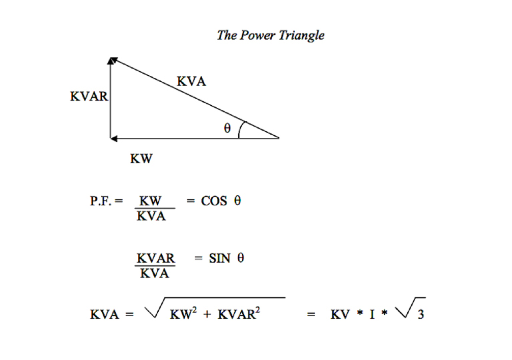
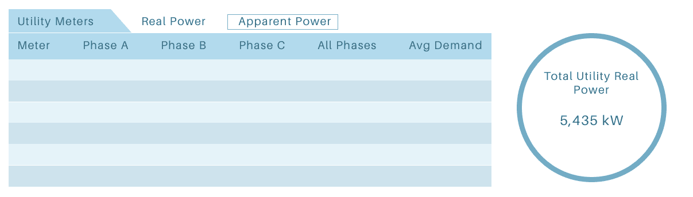

Controlco: Energy Dashboard
Desktop and kiosk UI for real time energy analytics in data
centers
Trang Tran

About Controlco
Controlco brings together building systems and networks through a web-based IoT app that lets users control their facility operations. The app consists of data visualizations and HVAC systems where settings can be changed to maintain favorable temperatures and conditions in commercial buildings. Controlco was tasked to work on one of the largest data centers in the Pacific Northwest.
The Problem
Data centers need constant monitoring of energy circulation because they host data for many tenants. In previous versions of our apps for other clients, we provide a dashboard for such. However, the design of our app has changed and we would need an updated energy summary page for this property. This was an opportunity to enhance the energy page based on the users' needs.
I was tasked with this project as my first autonomous UX design role. I worked with a data modeler, a PM, and the front-end team.
What do users want in the energy page?
I collaborated with the PM and data modeler to learn more about the users and their goals. The end users are data center technicians who operate directly on the power distribution units located in the racks. Their goal is to quickly resolve data center facility energy issues.
37 years old
Data Center Operations Technician
Jason is responsible for triaging and repairing data center fiber optic cabling/systems. In order to make sure everything is working in the data center, he first needs to know which systems he needs to fix. He needs a source of truth where he can find out the energy output and status of all of the units.
Wants to quickly get information about the best products all in one place. Does not want to rely on brochures and print collateral.
Very meticulous and crafty, and hates wasting time. Wants to be able to do his job quickly.
To help the users, we needed to design a read-only UI that allows users to track the energy consumption of the data center. A few required data points include the energy and phases of various meters, UPSs, PDUs, as well as data points for Apparent and Real power. My concern was that according to the PM, users absolutely needed to see Apparent and Real power, kVA and kW, at once. The reason for that was because the values are part of some formula that helps them calculate the total power consumed.
Some complicated math that shows why both kVA and kW are important. ¯\_(ツ)_/¯
The Decision To Not Display Both Units
I was absolutely against the idea of displaying both units of power at once. Showing two power units for every phase of every meter would result in a brutal experience for users as it would make it hard to find data points on the UI and slow the app to crawl. As much as they claimed it would be a "nice to have" in our meetings, I felt that foregoing that option was the user-friendlier choice.
I came up with a proposal that challenged the requirements, which involved:
The reason behind these decisions was to make sure users would achieve their goals of finding data easily so they can actually spend time working on the equipment. Having to look through hundreds of data points will not help with that.
Meter Lo-fi Wireframe
I wireframed the concept of the table for each device. This would include the meter names, phases, total power, and a toggle to switch between Apparent and Real power. The wireframe was shown to the PM and engineering team, who agreed that the toggle was actually a valid suggestion as it would result in faster load times.
The component that would be used for each data rack. There would be logic in the back-end that autopopulates the values for each of these components.
Visual Design
I wanted to stay consistent with the colors of the customer's brand, so we used various blues upon a dark interface (data centers are fairly dim, so this would help their eyes adjust). Since we didn't have a design guide in place, I took the liberty to come up with a one off. We chose Roboto as it is an easy font to scan within rows of data.
The completed final design.
Optimized Performance
We developed the summary page using DGLux5, a rapid development platform made especially for data-driven applications and IoT. We integrated dummy data and allowed our internal data modelers to to test out the performance. After QA'ing it, we granted our users access to the design with their data. The data on the summary loaded quickly, and there was no lag with the toggle either.
Users said they appreciated the interactivity of the tables. Hovering over a row would highlight it, allowing them quicker assessment of their units.
How do we help users find data easily and quickly?
Reviewed past energy dashboards from other customers and spoke directly with users
Came up with concept of toggling between powers
Aligned UI aesthetic with customer brand
Took one month to build directly on DGLux5 platform
Technicians used new energy page in their own environment and claimed feature was useful in helping complete their tasks faster (and was better to look at)
The New Energy Page Standard
The feature outperformed old energy summary pages that we had with other facilities because it loaded faster, and customers claimed that it was much easier to read. The customer loved the customized toggle and ultimately chose to use this interface as the standard for their other data centers in North America.
The Takeaway
I was especially honored and delighted that I was able to come up with this solution which was the direct result of putting our users at the forefront of planning. In some instances like these, customers might claim that they need something because it's something they're used to, but won't be able to give a solid reason as to why it is important to them. As UX designers, it is our resolve to understand our users' end goals and craft the most optimal path for them to get there.